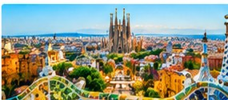
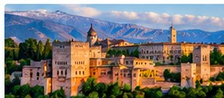
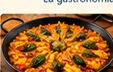
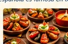
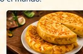
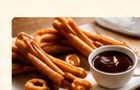

Barcelona
La Sagrada Família es una iglesia famosa.
The Sagrada Família is a famous church.
Barcelona combina arte, arquitectura y playas. — Barcelona combines art, architecture and beaches.
Explore the Sagrada Família ↗España: cultura, sabor y aventura.
Spain: culture, flavour, and adventure. Discover unforgettable places, delicious food, lively traditions and a language spoken around the world.
España está en el suroeste de Europa. — Spain is in southwestern Europe.
Madrid es la capital de España. — Madrid is the capital of Spain.
España tiene playas hermosas, montañas y ciudades históricas. — Spain has beautiful beaches, mountains and historic cities.
Whether you love art, history, food or sunshine, Spain has something to inspire you.
Three unforgettable places to add to your travel wish list.

La Sagrada Família es una iglesia famosa.
The Sagrada Família is a famous church.
Barcelona combina arte, arquitectura y playas. — Barcelona combines art, architecture and beaches.
Explore the Sagrada Família ↗
La Alhambra es un palacio histórico.
The Alhambra is a historic palace.
Granada tiene una historia fascinante. — Granada has a fascinating history.
Discover the Alhambra ↗
Madrid ofrece museos, plazas y cultura.
Madrid offers museums, squares and culture.
¡Visita el corazón de España! — Visit the heart of Spain!
Explore Madrid ↗Spanish food is a delicious part of the travel experience. Which dish would you try first?

La paella es un plato tradicional.
Paella is a traditional dish.

Las tapas son pequeñas porciones para compartir.
Tapas are small portions to share.

La tortilla española lleva huevos y patatas.
Spanish tortilla contains eggs and potatoes.

¡Los churros con chocolate son deliciosos!
Churros with chocolate are delicious!
El flamenco combina música, canto y baile.
Flamenco combines music, singing and dance.
La Tomatina es una fiesta famosa en Buñol.
La Tomatina is a famous festival in Buñol.
Las Fallas se celebra en Valencia.
Las Fallas is celebrated in Valencia.
El fútbol también es muy popular en España.
Football is also very popular in Spain.
From energetic dance to colourful festivals, Spain's traditions bring people together.
En España se habla español. — Spanish is spoken in Spain.
También se hablan catalán, gallego y euskera en distintas regiones. — Catalan, Galician and Basque are also spoken in different regions.
Pablo Picasso y Salvador Dalí fueron artistas españoles. — Pablo Picasso and Salvador Dalí were Spanish artists.
Miguel de Cervantes escribió Don Quijote. — Miguel de Cervantes wrote Don Quixote.
Descubre monumentos, disfruta de playas y prueba nuevos sabores. — Discover monuments, enjoy beaches and try new flavours.
España es un destino para todos. — Spain is a destination for everyone.
Come to Spain and make unforgettable memories!
España: cultura, sabor y aventura.
Official Spain Tourism Website ↗